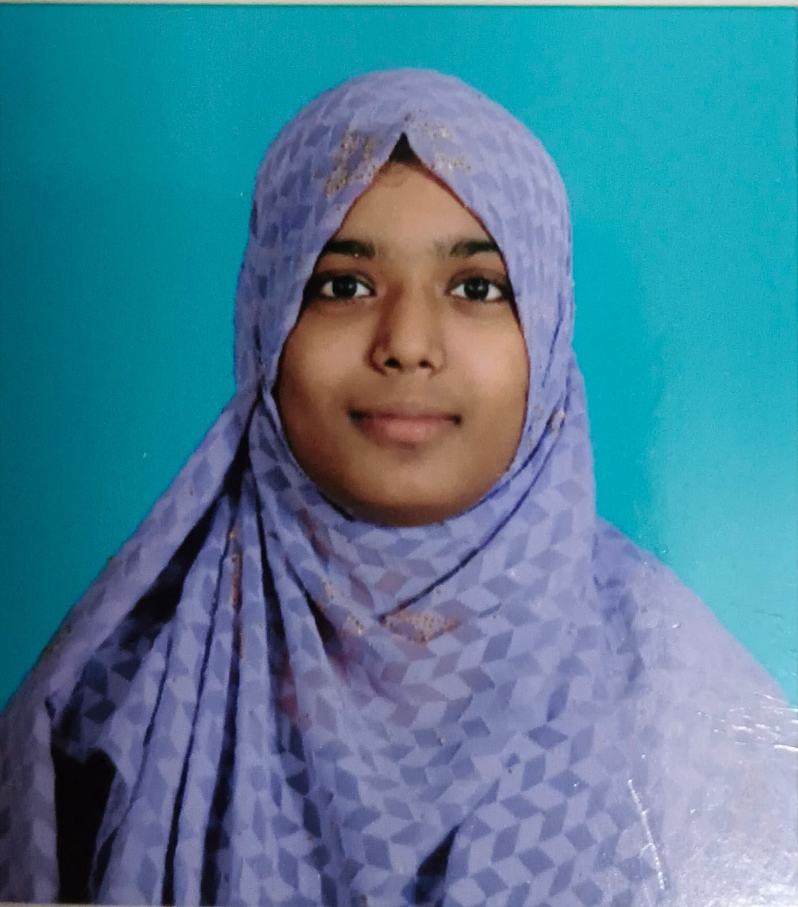

B.E. Computer Science & Engineering (Artificial Intelligence & Machine Learning)
CGPA: 8.86 | Currently in second year, 3rd semester
Hi, I’m
AI & ML Engineering Student · Front-End Developer
Second-year CSE (AI & ML) student with an 8.86 CGPA. I build computer vision and data science systems, like a crowd-risk monitor and a marine fishing-anomaly detector, and I ship clean, responsive front-ends.

I’m a second-year B.E. Computer Science & Engineering (AI & Machine Learning) student at Chennai Institute of Technology. Through national-level hackathons and academic projects I’ve built AI/ML systems in crowd-risk detection and marine anomaly detection using Python, OpenCV, YOLOv8, XGBoost and Streamlit.
Alongside the ML work, I have hands-on web development experience from a front-end internship, where I built responsive, mobile-first pages with HTML5, CSS3, Bootstrap and Sass.
CGPA: 8.86 | Currently in second year, 3rd semester
An AI-based crowd monitoring system that detects overcrowding and predicts safety risks.
An AI-driven system that detects suspicious fishing activity from AIS vessel data and marine protected-area boundaries.
Open to internships and entry-level roles in software development, front-end and AI/ML. Write to me below or reach me directly.